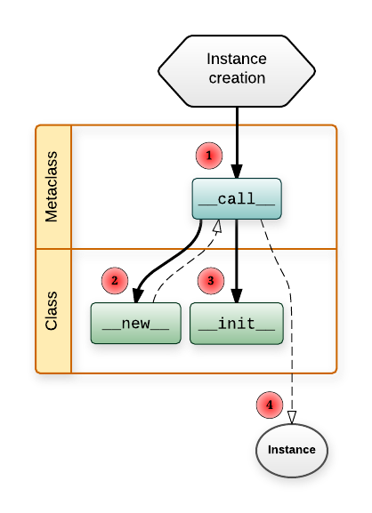

Metaclass¶
Attention
In this section, we use name class if we refer to non-metaclass. We use metaclass for metaclass.
Hint
What is Meta? Meta-X has the modern meaning of an X about X.
“This sentence contains thirty-six letters.”
is an example of meta-sentence referencing themselves in this way.
Everything is Object¶
In python, everything is object. So, classes are objects. The question is what is the class of class. The answer is metaclass. Object is an instance of class. Class is an instance of metaclass. Moreover, class is first-class object in python. When we try to control the construction and initializion of object, we define __new__ and __init__ in class. Therefore, to control classes construction and initializion, we need those two methods in metaclass.
By default, type is the metaclass of all. When construct class, type’s __new__ and __init__ should be called. If keyword metaclass is used, then metaclasses __new__ and __init__ will be used. Usually, metaclass also inherits from type so if some methods are lacking, it’s ok.
Here we create a Meta as metaclass which inherits from type. In __new__ function which actually creates the instance of Meta(an actual class), It creates a class, sets an attr with value and returns it.
class Meta(type):
def __new__(cls, name, bases, dct):
x = super().__new__(cls, name, bases, dct)
x.attr = 100
return x
class Foo(metaclass=Meta):
pass
>>> Foo.attr
100
Classes Construction and Initializion¶
Most real-life metaclasses will probably override just one of __new__ and __init__. __new__ should be implemented when you want to control the creation of a new object (class in our case), __init__ should be implemented when you want to control the initialization of the new object(class in our case) after it has been created.
Here’s a more concrete example that should demonstrate what’s going on:
class MyMeta(type):
def __new__(meta, name, bases, dct):
print('-----------------------------------')
print("Allocating memory for class", name)
print(meta)
print(bases)
print(dct)
return super(MyMeta, meta).__new__(meta, name, bases, dct)
def __init__(cls, name, bases, dct):
print('-----------------------------------')
print("Initializing class", name)
print(cls)
print(bases)
print(dct)
super(MyMeta, cls).__init__(name, bases, dct)
When Python executes the following class definition:
class MyKlass(metaclass=MyMeta)
def foo(self, param):
pass
barattr = 2
Output:
-----------------------------------
Allocating memory for class MyKlass
<class '__main__.MyMeta'>
(<type 'object'>,)
{'barattr': 2, '__module__': '__main__',
'foo': <function foo at 0x00B502F0>,
'__metaclass__': <class '__main__.MyMeta'>}
-----------------------------------
Initializing class MyKlass
<class '__main__.MyKlass'>
(<type 'object'>,)
{'barattr': 2, '__module__': '__main__',
'foo': <function foo at 0x00B502F0>,
'__metaclass__': <class '__main__.MyMeta'>}
So when the call to MyMeta is done above, what happens under the hood is this:
MyKlass = MyMeta.__new__(MyMeta, name, bases, dct)
MyMeta.__init__(MyKlass, name, bases, dct)
Study and understand this example and you’ll grasp most of what one needs to know about writing metaclasses. It’s important to note here that these print-outs are actually done at class creation time.
Attention
When the module containing the class is being imported for the first time. Keep this detail in mind, since it only running once.
Classes Call¶
Another metaclass method that’s occasionally useful to override is __call__.
class MyMeta(type):
def __call__(cls, *args, **kwds):
print('__call__ of ', str(cls))
print('__call__ *args=', str(args))
return type.__call__(cls, *args, **kwds)
class MyKlass(metaclass=MyMeta)
def __init__(self, a, b):
print('MyKlass object with a=%s, b=%s' % (a, b))
>>> foo = MyKlass(1, 2)
Output:
gonna create foo now...
__call__ of <class '__main__.MyKlass'>
__call__ *args= (1, 2)
MyKlass object with a=1, b=2
Here MyMeta.__call__ just notifies us of the arguments and delegates to type.__call__. But it can also interfere in the process, affecting the way objects of the class are created.
Comparision between __new__/__init__ with __call__¶
__call__: Reorganize, keep or delete result of instance. E,g Singleton implementation. If you need a singleton object which is an instance of class. You need some control when doing Class() which call__call__in metaclass.__new__or__init__: Add methods to Class definition. Popular methods are get, set del etc.
Complete Example¶
class Singleton(type):
_instances = {}
def __new__(meta, name, bases, dct):
print('Metaclass __new__')
return super().__new__(meta, name, bases, dct)
def __init__(cls, name, bases, dct):
print('Metaclass __init__')
super().__init__(name, bases, dct)
def __call__(cls, *args, **kwargs):
print('enter Singleton call')
if cls not in cls._instances:
cls._instances[cls] = super(Singleton, cls).__call__(*args, **kwargs)
print('exit Singleton call')
return cls._instances[cls]
def func_in_metaclass(self, tmp):
print(tmp)
class Baseclass:
def __new__(cls, *args, **kwargs):
print('Base new')
return super().__new__(cls, *args, **kwargs)
def __init__(self, *args, **kwargs):
print('Base init')
super().__init__(*args, **kwargs)
def func_in_baseclass(self, tmp):
print(tmp)
class Foo(Baseclass, metaclass=Singleton):
def __new__(cls, *args, **kwargs):
print('Foo new')
return super().__new__(cls, *args, **kwargs)
def __init__(self, *args, **kwargs):
print('Foo init')
super().__init__(*args, **kwargs)
# Output:
# Metaclass __new__
# Metaclass __init__
>>> b = Foo()
>>> b.func_in_baseclass('abc')
>>> b.func_in_metaclass('abc')
Output:
enter Singleton call
Foo new
Base new
Foo init
Base init
exit Singleton call
abc
---------------------------------------------------------------------------
AttributeError Traceback (most recent call last)
<ipython-input-68-ac69ce97d219> in <module>
1 b = Foo()
2 b.func_in_baseclass('abc')
----> 3 b.func_in_metaclass('abc')
AttributeError: 'Foo' object has no attribute 'func_in_metaclass'
Tip
One advantage compared to class decorators is the fact that subclasses inherit the metaclass.
Object Create Sequence¶
In above example, when running b = Foo(). The super in metaclass called __call__ of type. The code above reveals what it actually does:
class type:
def __call__(cls, *args, **kwargs):
# ... a few things could possibly be done to cls here
# then we call cls.__new__() to get a new object
obj = cls.__new__(cls, *args, **kwargs)
# ... a few things done to obj here
# then we call obj.__init__()
obj.__init__(*args, **kwargs)
# ... maybe a few more things done to obj here
# then we return obj
return obj
obj = cls.__new__(cls, *args, **kwargs)is actually calling__new__ofFoo.__new__ofBaseis called inside bysuper.obj.__init__(*args, **kwargs)is actually calling__init__ofFoo.__init__ofBaseis called inside bysuper.
A diagram of how instances are constructed:
If you prefer, you could check cpython source code here.